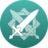

Anemo
Venti
- ⭐⭐⭐⭐⭐
- Elemento: Anemo
- Región: Mondstadt
- Arma: Arco
- Rol: Off-Field DPS
- Género: Masculino
- Cumpleaños: 16 Junio
Descripción
Venti es un personaje jugable en Genshin Impact. Es un bardo de espíritu libre y amante del vino en Mondstadt y el actual recipiente mortal de Barbatos, el Arconte Anemo. Llegó por primera vez en la Versión 1.0 en el gachapón "Oda del cáliz".
Habilidades
Puntería divina
Sonata celestial
Pulsar una vez Invoca un campo de viento en la ubicación del enemigo, infligiendo Daño Anemo de Área y lanzando a los enemigos por el aire.
Mantener pulsado invoca un campo de viento aún más grande con Venti como epicentro, infligiendo Daño Anemo de Área y lanzando a los enemigos afectados al aire. Después de soltar esta habilidad, Venti cabalga el viento en el aire.
Gran Oda del Viento
Dispara una flecha hecha de innumerables vientos fusionados, creando un enorme Ojo de la Tormenta que absorbe objetos y enemigos a su paso e inflige Daño Anemo.
Cambio elemental si el Ojo de la tormenta entra en contacto con Hydro/Pyro/Cryo/Electro, inflige Daño elemental adicional de ese tipo. El cambio elemental solo puede ocurrir una vez por uso.
Jean
- ⭐⭐⭐⭐⭐
- Elemento: Anemo
- Región: Mondstadt
- Arma: Espada
- Rol: Burst Support
- Género: Femenino
- Cumpleaños: 14 Marzo
Descripción
Jean Gunnhildr es un personaje jugable de Genshin Impact. Hija de Frederica Gunnhildr y Seamus Pegg, la hermana mayor de Bárbara y descendiente del prestigioso Clan Gunnhildr, Jean es la Gran Maestra Intendente de los Caballeros de Favonius. Ella siempre está ocupada manejando los disturbios en Mondstadt y, por supuesto, trabajando incansablemente para mantener la Ciudad de la Libertad. Llegó por primera vez en la Versión 1.0 en el gachapón.
Habilidades
Técnica de espada Favonius
Filo de ventisca
Concentrando el poder del viento en su espada, Jean canaliza una minitormenta, lanzando a los enemigos que se encuentran en la dirección que apunta e infligiendo una gran cantidad de Daño Anemo. Mantener pulsado: Aguante para ordenar al torbellino que atraiga a los enemigos cercanos frente a ella. La dirección de atracción puede ajustarse. El personaje quedará inmóvil mientras dure la habilidad.
Brisa de Dandelion
Invoca la protección del viento para crear un Campo de diente de león, empujando a los enemigos cercanos e infligiendo Daño Anemo. Al mismo tiempo, cura de inmediato una gran cantidad de Vida a todos los aliados y miembros del equipo. La cantidad restaurada varía según el ATQ de Jean.
Campo de dientes de león:
Xiao
- ⭐⭐⭐⭐⭐
- Elemento: Anemo
- Región: Liyue
- Arma: Lanza
- Rol: DPS
- Género: Masculino
- Cumpleaños: 17 Abril
Descripción
Xiao es un personaje jugable en Genshin Impact. Es un Adeptus, bajo el nombre de Alatus, y el único miembro restante conocido de los cinco principales Yakshas enviados por Morax para someter a los espíritus demoníacos que plagaban Liyue. Actualmente reside en Posada Wangshu y en su mayoría se aísla de las multitudes y de las interacciones humanas. Xiao estuvo disponible como personaje jugable en la segunda Beta privada. Hizo su primera aparición como PNJ en la Versión 1.0 y llegó por primera vez (públicamente) en la Versión 1.3 en el gachapón "Invitación al mundo mortal".
Habilidades
Impulso de torbellino
Ciclón de viento lemniscático
Xiao se lanza hacia adelante e inflinge Daño Anemo a todos los enemigos que se crucen en su camino. Puede activarse en el aire y empieza con un total de 2 cargas.
Azote de todos los males
Xiao se pone la máscara de Yaksha que aterrorizó tanto a los demonios como a los arcontes hace miles de años.
Máscara de Yaksha
Estar en esta forma consume la Vida de Xiao de manera continua.
Kazuha
- ⭐⭐⭐⭐⭐
- Elemento: Anemo
- Región: Inazuma
- Arma: Espada
- Rol: Support
- Género: Masculino
- Cumpleaños: 29 Octubre
Descripción
Kaedehara Kazuha es un personaje jugable de Genshin Impact. Un samurái errante del otrora famoso Clan Kaedehara, Kazuha es un miembro temporal de la tripulación de la Flota Crux Meridianam. Llegó por primera vez en la Versión 1.6 en el gachapón "Hojas en el viento".
Habilidades
Técnica de espada Garyu
Vehemencia estremecedora
Usa una técnica secreta para crear un fuerte vendaval que atrae a los enemigos y los objetos hacia la ubicación actual de Kaedehara Kazuha, los lanza por los aires y les inflige Daño Anemo.
Filo de las diez mil hojas
Ejecuta la técnica Garyu definitiva para realizar un corte de tormenta que inflige Daño Anemo en el AdE. El viento generado por la espada creará un área llamada "viento del otoño", que infligirá regularmente Daño Anemo a los enemigos dentro de ella.
Cambio elemental: Si viento del otoño entra en contacto con Hydro/Pyro/Cryo/Electro mientras dure, infligirá un bono de Daño Elemental adicional de ese tipo.